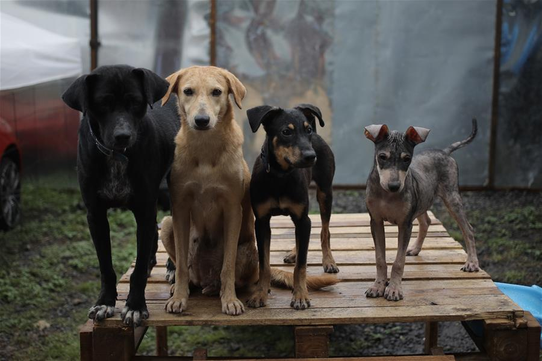

"¡Ayuda un Peludo!" es una organización sin fines de lucro que se dedica a rescatar animales en situaciones de abandono, maltrato o en riesgo de ser sacrificados en perreras. Su objetivo principal es proporcionar una vida digna y amorosa a cada animal que rescatan, asegurándose de que sean adoptados por familias responsables y comprometidas.
El equipo de "Ayuda un Peludo" está formado por voluntarios apasionados por el bienestar animal, quienes trabajan incansablemente para salvar vidas. Su labor consiste en brindar atención veterinaria, alimentación y alojamiento temporal a los animales rescatados, mientras se les busca un hogar definitivo.

Nuestras secciones de ayuda:
Perros